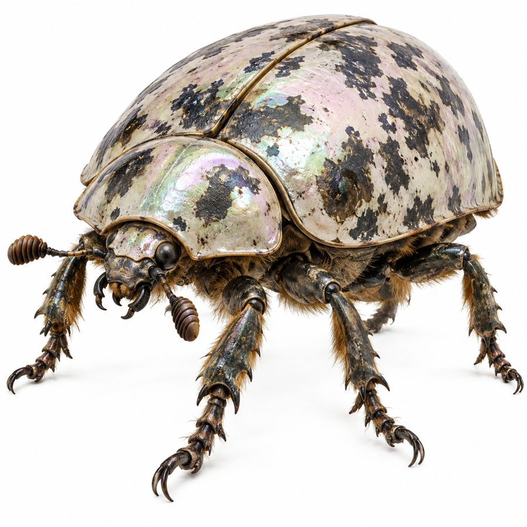

Mresorak
Cattle-sized beetles that graze the giant fungi of the borderland forest.
- Group
- Fungal forest
- Tags
- forest Mresibooshle
- Size
- About the size of cattle. Canon
- Role
- The forest’s biggest herbivore, grazing directly on the giant fungi. Canon
- Body
- A domed, pearlescent shell with dark patches, and strong clawed legs. Decided
Elytra
The polished wing-covers become belt plates, pauldrons, fans and decorative scale-work, iridescent armor that is not metal. The material is genuinely contested, because the forest is unclaimed borderland. Canon
Skulls
A hollowed Mresorak head is the body of the Mresotharu, the skull-banjo of the borderland folk. Canon
